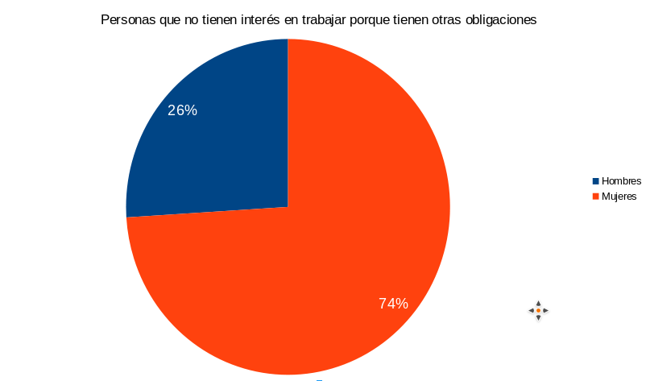
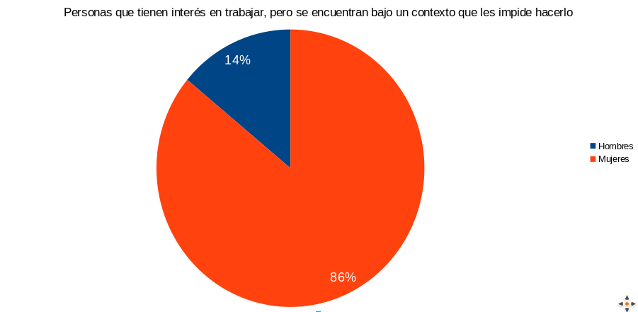
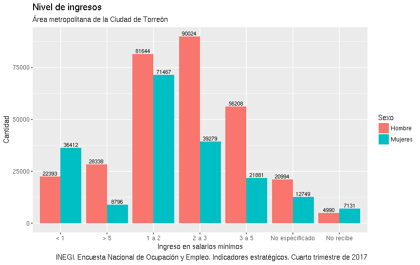

Condiciones laborales de las mujeres en Torreón
Una de las principales luchas de las mujeres ha sido lograr el acceso y condiciones igualitarios al trabajo. Si bien la Constitución establece en su artículo 123, que “toda persona tiene derecho al trabajo digno y socialmente útil”, las estadísticas muestran que tanto a nivel nacional, estatal y municipal, todavía existen diferencias importantes entre hombres y mujeres respecto a este derecho fundamental.
Según la Encuesta Nacional de Ocupación y Empleo (ENOE), publicada para el último trimestre de 2017, en México y en Coahuila, el porcentaje de mujeres que pertenece a la fuerza laboral es del 43%, menor al 48.22% del municipio de Torreón; porcentajes que corresponden a la cantidad de mujeres en edad de trabajar de la población económicamente activa (PEA). Esto muestra que, a pesar de tener la edad suficiente, la mayoría de las mujeres no realizaba ningún trabajo ni estaba buscando activamente emplearse.
Más específicamente, los resultados de la ENOE arrojan que el porcentaje de mujeres que están disponibles, pero no buscan empleo porque consideran que no tienen posibilidades, es mayor al de los hombres bajo esa misma categoría; al igual que el porcentaje de mujeres que han desistido de buscarlo.
De las personas que tienen interés para trabajar, pero se encuentran bajo un contexto que les impide hacerlo, el 86% son mujeres, cifra que supera al 84% a nivel estatal; y de las personas que no tienen interés para trabajar porque tienen otras obligaciones, el 74% corresponde a mujeres, cifra que es igual en el estado y en Torreón.

Por su parte, la tasa de desocupación de las mujeres de Torreón es mayor al de las mujeres del estado, con un 5.3 y un 4.4 respectivamente; esta diferencia se incrementa cuando comparamos a mujeres y hombres de la ciudad, donde los hombres tienen una tasa de desocupación de 3.9. De la gente desocupada en Torreón debido a que renunció a su empleo, la mayoría son mujeres, con un 52.77%, al igual que en la categoría de las personas que están desocupadas porque dejaron o cerraron un negocio propio, en donde las mujeres son un 74.2%.

Estas cifras dan un panorama de que aún falta mucho para la inclusión mayoritaria de las mujeres a la fuerza de trabajo. Aunado a esto, las cifras de las mujeres que se encuentran trabajando también nos hace darnos cuenta de sus desventajas laborales.
La tasa de ocupación parcial en la ciudad, que corresponde a personas que trabajan menos de 15 horas a la semana, es mayor en las mujeres que en los hombres, al igual que la tasa de mujeres en la informalidad. Esto significa, por una parte, que aunque las mujeres trabajan, lo hacen por menos tiempo que los hombres, y además, que tienen un acceso más restringido a prestaciones laborales y de salud; así, de las mujeres ocupadas en Torreón, un 34% no tienen acceso a instituciones de salud y un 15% no tiene otras prestaciones.
Diferencias Salariales
Otro ámbito en donde más se observa diferencia, es el salarial; pues mientras las mujeres torreonenses ganan un promedio de $40.9 pesos por hora trabajada, los hombres ganan $44.5 pesos. A nivel estatal, la población gana menos por hora trabajada, pero la diferencia salarial entre mujeres y hombres es menor, ya que las mujeres ganan $40.2 pesos y los hombres $41.7 pesos. Si hacemos una comparación con Saltillo, la diferencia entre ingresos también es menor a la de Torreón, además de que los saltillenses ganan más en promedio, esto es, ganan $44.5 pesos las mujeres y $46.5 pesos los hombres.
El promedio de mujeres subordinadas en la ciudad que no reciben percepciones salariales, es decir, que reciben su pago a través de comisiones, honorarios, propinas, etc., es de 46.7, mayor al 36.2 de los hombres. En cambio, en el estado, este promedio es menor en las mujeres, con un 34.2, y mayor en los hombres, con un 36.7.
El INEGI cuenta con 7 clasificaciones salariales expresadas en salarios mínimos ganados. Las mujeres en Torreón superan a los hombres en sólo dos clasificaciones: en la primera, que corresponde a las personas que ganan como máximo hasta 1 salario mínimo, con un 61.9% de las mujeres contra un 38.1% de los hombres; y en la última, que abarca a las personas que trabajan, pero no reciben salario, con un 59% y un 41% respectivamente. En sentido inverso, el 77% de las personas que ganan más de 5 salarios mínimos son hombres.

Los sectores económicos que más contratan mujeres en la ciudad son: Servicios Sociales, en donde el 61.7% de los trabajadores son mujeres; Servicios Diversos, con un 55.5%; y Restaurantes y Servicios de Alojamiento, con un 62.3% de mujeres ocupadas en todo el sector.
Así pues, los avances en cuanto a presencia y condiciones laborales de las mujeres han sido significativos en comparación con las condiciones que tenían las mujeres del siglo pasado; sin embargo, aún queda mucho por hacer.
El Día Internacional de la Mujer debe ser no sólo un día para recordar las décadas de luchas de las mujeres, sino un día para tomar consciencia de los retos presentes, y las acciones que debemos emprender para hacerles frente.
Fuente:
Encuesta Nacional de Ocupación y Empleo (2018) Tabulados Básicos. IV Trimestre 2017. INEGI.